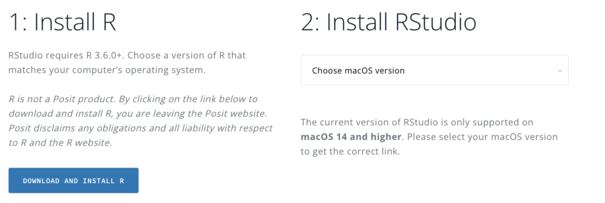

install.packages("tidyverse")Getting Started with R: Installation and First Steps
How to start with R from scratch? This post explains step-by-step how to install R and RStudio, how to install and load the Tidyverse, and what to check to ensure everything is working correctly.
Starting with R often raises very specific questions. What to install, in what order, what each thing is for. Before writing a single line of code, it’s worth clarifying this point, because R works with several pieces that combine with each other. The good news is that the installation process is simple and only needs to be done once.
The first step is to install R. R is the programming language itself. To do this, go to the official project site CRAN, and choose the installer file that corresponds to your operating system (Windows, macOS, or Linux). By clicking, you will access the specific instructions for each case.

Technically, we could use R directly from the software we just installed, on Windows and macOS. However, it is not a very user-friendly graphical interface, so most people use other environments like RStudio, VSCode, or Positron. If we are just starting, it is preferable to use RStudio, because most tutorials will show images of that environment.
As we mentioned in a previous post, RStudio is an independent program that is installed separately. It is a graphical interface (technically, an integrated development environment) that facilitates the interaction between the user and the R programming language. To install it, you have to go to the RStudio site and download the free version. As seen in the image, we can also install R from here, but if we have already installed it from CRAN, there is no need to install it again.

When opening RStudio for the first time, it automatically detects the R installation and is ready to use. From that moment on, RStudio becomes the main workspace.
With R and RStudio installed, it is now possible to write and execute code. The next usual step is to install packages, which are add-ons that extend R’s capabilities. One of the most used is the Tidyverse, a set of packages designed to work with data in an organized and readable way (you can read more about what packages are here).
Installing a package in R is done by typing an instruction in the console. In the case of the Tidyverse, the command is:
Once we write the code, we must execute it (control+Enter or the “Run” icon). This step requires an internet connection and may take a few minutes, because the Tidyverse includes several packages. Many colored messages will appear in the console: this is normal (unless something says “Warning” or “Error”). The installation is done only once. Once installed, to use it in a work session, you have to load it with:
library(tidyverse)Warning: package 'tibble' was built under R version 4.4.1Warning: package 'purrr' was built under R version 4.4.1Warning: package 'stringr' was built under R version 4.4.1── Attaching core tidyverse packages ──────────────────────── tidyverse 2.0.0 ──
✔ dplyr 1.1.4 ✔ readr 2.1.5
✔ forcats 1.0.0 ✔ stringr 1.6.0
✔ ggplot2 3.5.1 ✔ tibble 3.3.0
✔ lubridate 1.9.3 ✔ tidyr 1.3.1
✔ purrr 1.2.0
── Conflicts ────────────────────────────────────────── tidyverse_conflicts() ──
✖ dplyr::filter() masks stats::filter()
✖ dplyr::lag() masks stats::lag()
ℹ Use the conflicted package (<http://conflicted.r-lib.org/>) to force all conflicts to become errorsThis difference between installing and loading often causes confusion at first. Installing downloads the package to the computer. Loading makes it available in the current R session. Every time a new session is started and you want to use the Tidyverse, you have to run library(tidyverse) again.
After loading it, R shows some messages in the console indicating which packages were activated. From that moment on, functions like ggplot, mutate, or filter become available. There’s no need to understand them all immediately. The important thing is to know that they are part of the same ecosystem and share a common logic.
A practical tip for beginners is to verify that everything is working. For example, write a simple line like:
ggplot(mtcars, aes(x = mpg, y = wt)) + geom_point()
If a plot appears, the installation was successful. It doesn’t matter if the code is not yet understood. That will be worked on later.
Installing R, RStudio, and the Tidyverse marks the beginning of the work. From there, learning R involves familiarizing oneself with the environment, with writing scripts, and with reading code. Having these tools well installed and working avoids many unnecessary problems and allows you to focus on what’s most important: understanding what the code does and how to use it to analyze data.
In the next posts of this series, we will break down these pieces in more detail, so that the initial step transforms into a solid working foundation.